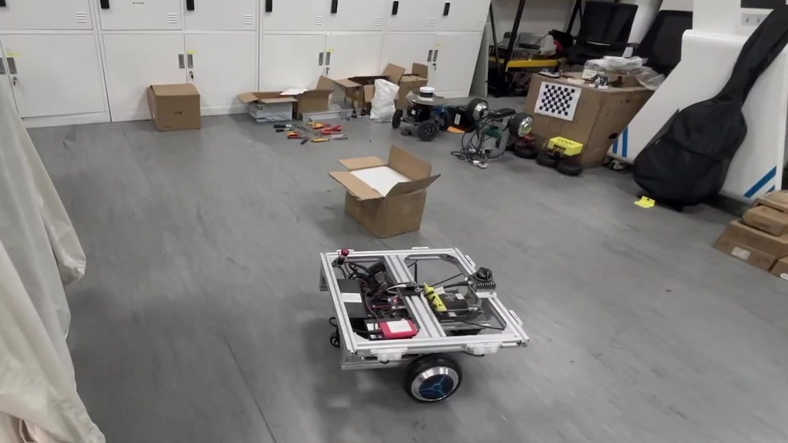
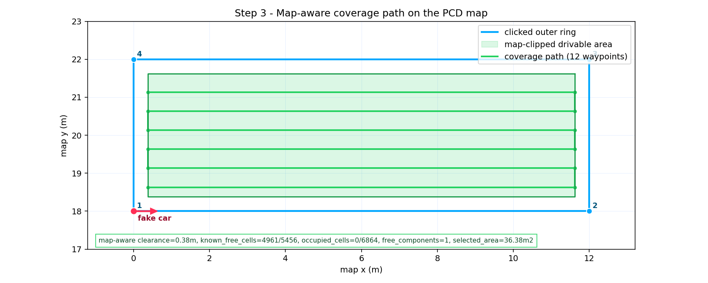
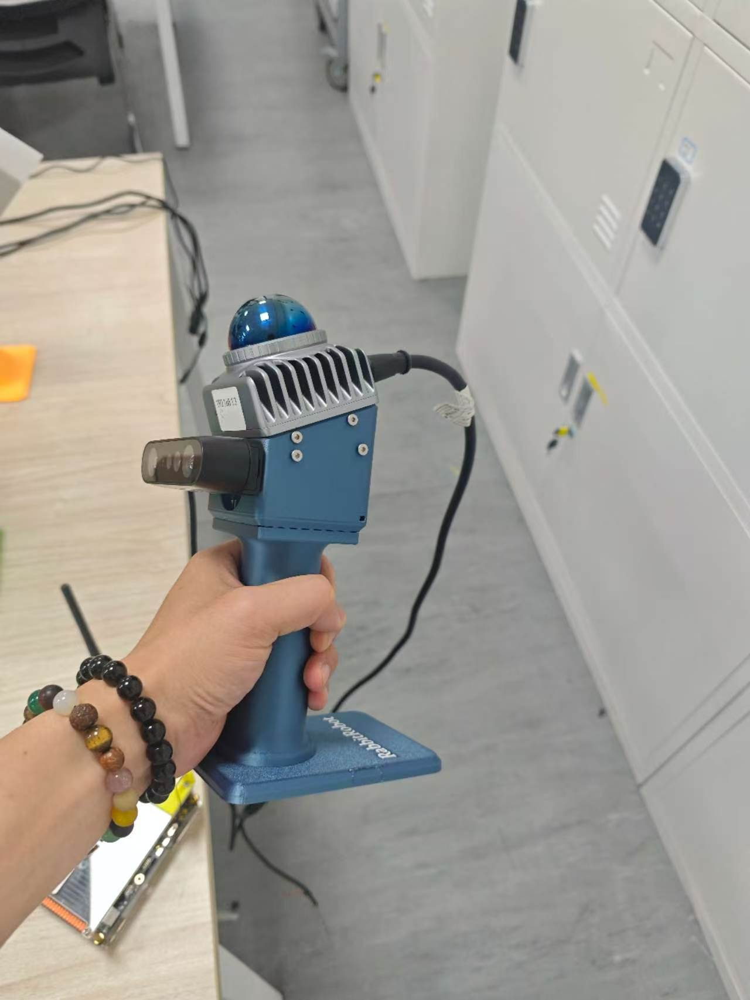
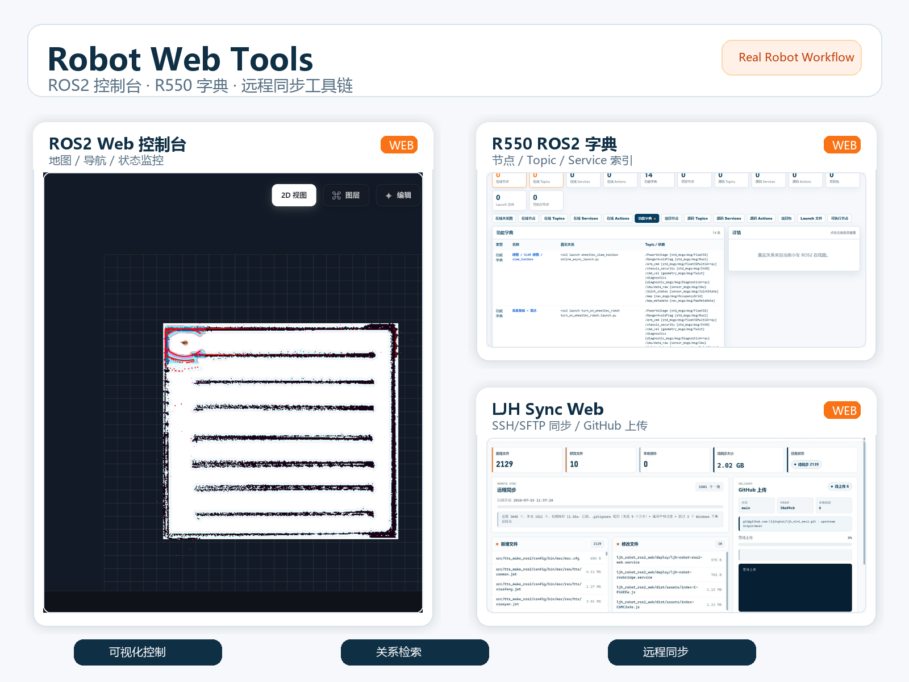

这些项目围绕真实 AMR 平台、Vision-Language Navigation、ROS 2 / Nav2 系统工程和机器人 Web 工具展开，记录了我从研究问题到硬件平台、算法验证和工程工具沉淀的主要实践。

Main Platform
RabbitRobot: 真实 AMR 与 VLN 研究平台
Lijinghai · ROS 2 AMR · Vision-Language Navigation · Real-Robot System
长期个人机器人平台 / 研究试验台 / 工程作品集主线
RabbitRobot 是我长期推进的开源机器人平台：从底盘结构、电机与传感器接入、ROS 2 / Nav2、SLAM、多传感器融合，到 Web 控制台、数据记录和公开文档持续迭代。它不是一个孤立 demo，而是我把论文问题、真实硬件和可复现实验接起来的主项目。
- 系统闭环：机械、传感器、导航、Web、文档一体化推进。
- 研究承载：作为 VLN、SLAM、路径规划和真实 AMR 验证平台。
- 招聘价值：展示从 0 到 1 搭系统、跑实验、讲清楚的能力。
project page
/
GitHub profile

Research Direction
RabbitRobot_VLN / VLR: 长程导航偏航检测与可验证恢复
VLN · VLM Agent · semantic subgoals · topology / BEV memory · recovery verification
围绕 Vision-Language Navigation，我重点关注长程导航中“走偏了如何发现、如何解释、如何恢复”的问题：把自然语言任务、视觉/地图 grounding、waypoint 规划、历史记忆和真实 AMR 执行评估串成一条实验链路。目标是形成可复现的 baseline、ablation、failure analysis 和后续论文/报告入口。
- 研究问题：长程 VLN 的偏航检测、状态表征和恢复策略。
- 方法线索：语义子目标、拓扑记忆、BEV 线索和 VLM 推理。
- 落地方式：用 RabbitRobot 承接仿真到真车的验证闭环。
RabbitRobot_VLN
/
research line

Real Robot System
RabbitRobot_AMR2: ROS 2 真车导航与安全链路
DS20270C · Livox MID360 · FAST-LIO · ICP localization · Nav2 MPPI · Web Console
AMR2 是一套真实轮毂伺服 AMR 系统，覆盖 MID360 接入、FAST-LIO 建图、ICP 定位、pointcloud-to-laserscan、Nav2 MPPI 控制、速度平滑、collision monitor 和 Web 控制台。项目重点是把导航算法放到真实底盘、地图、TF、速度链路和实验记录里验证。
- 硬件链路：轮毂伺服底盘、LiDAR、CAN/串口、Jetson/工控部署。
- 导航链路：map -> odom、Nav2、MPPI、速度平滑和避障保护。
- 验证材料：真车图片、Web 导航画面、运行视频和项目详情页。
details
/
video

Planning / Product Scenario
Coverage Path Planning: 面向清洁/巡检 AMR 的覆盖路径规划
OccupancyGrid · map-aware clipping · footprint clearance · RViz Rect/Poly · Nav2 bridge
这个项目把“在真实地图上画一块区域，然后让机器人生成安全覆盖路径”做成可交互能力：基于 PCD 转出的 2D occupancy map，结合机器人 footprint、安全膨胀、known-free 裁剪、障碍避让和连通区域选择，输出可视化 `/coverage_path`，并提供 RViz 工具、Web 控制台和 Nav2 dry-run 桥接。
- 应用场景：清洁、巡检、窄通道和规则区域覆盖。
- 算法重点：地图裁剪、footprint clearance、障碍膨胀和路径校验。
- 工程接口：RViz Rect/Poly、ROS2 service、Web API、Nav2 桥接。
details
/
readme

Mapping / Perception Tools
HandLiDAR / Multi-Sensor Mapping: 环境采集与建图工具链
Unitree L1 · D435 · Livox MID360 · RTAB-Map · FAST-LIO / FAST-LIVO2 · point cloud mapping
围绕真实场景采集和地图构建，我搭建了手持 LiDAR、多传感器采集和点云/视觉建图工具链，连接 LiDAR、深度相机、点云、位姿估计、RTAB-Map、FAST-LIO / FAST-LIVO2 等流程。它为导航、覆盖路径和 VLN 任务提供环境数据基础。
- 传感器：LiDAR、深度相机、IMU 和视觉/点云输入。
- 建图链路：RTAB-Map、FAST-LIO、FAST-LIVO2、点云查看和标定流程。
- 项目价值：让机器人任务有真实地图、真实数据和复盘材料。
details
/
rtab-map

Engineering Tools
Robot Web Tools: ROS2 控制台、字典与远程同步
rosbridge · React / Vite · systemd · SSH / SFTP · GitHub workflow
除了机器人算法本身，我也在做提高机器人开发效率的工具：ROS2 Web 控制台把地图、图层、导航控制、任务状态和日志入口放进浏览器；R550 ROS2 Web Dictionary 用来检索真实节点、话题、服务和动作；`ljh_sync_web` 负责远程机器人代码的 SSH/SFTP 增量同步、过滤、备份和 GitHub 上传。
- 调试效率：降低对单机 RViz 环境和手工命令的依赖。
- 远程运维：systemd、rosbridge、局域网访问和多设备同步。
- 工程习惯：配置持久化、日志、备份、测试截图和提交记录。
Robot Web Tools
/
ROS2 Web detail